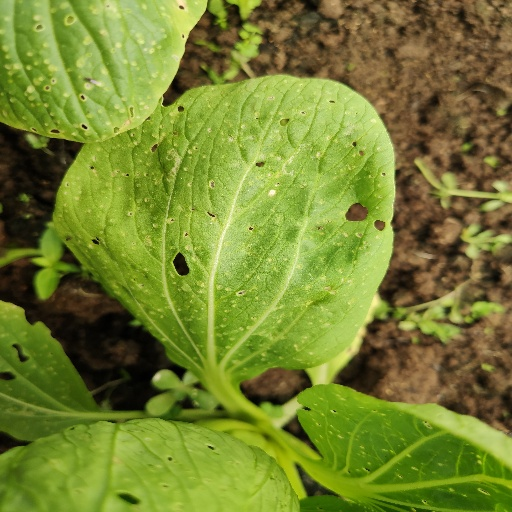
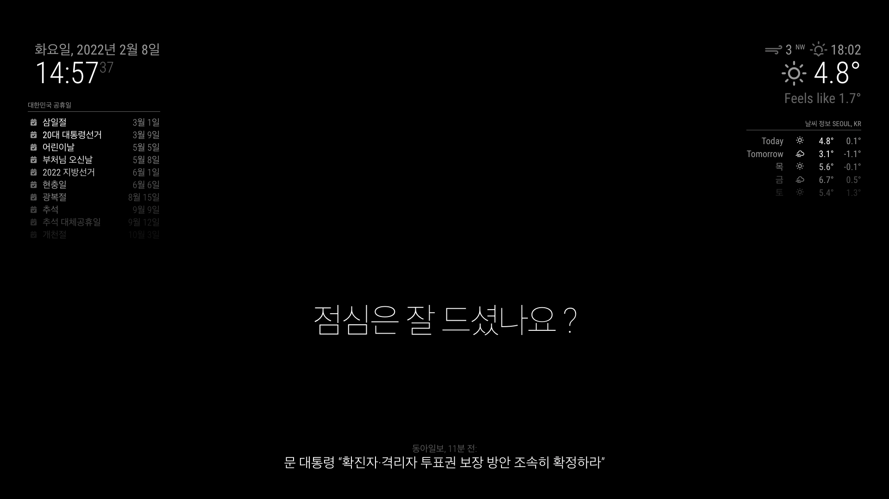
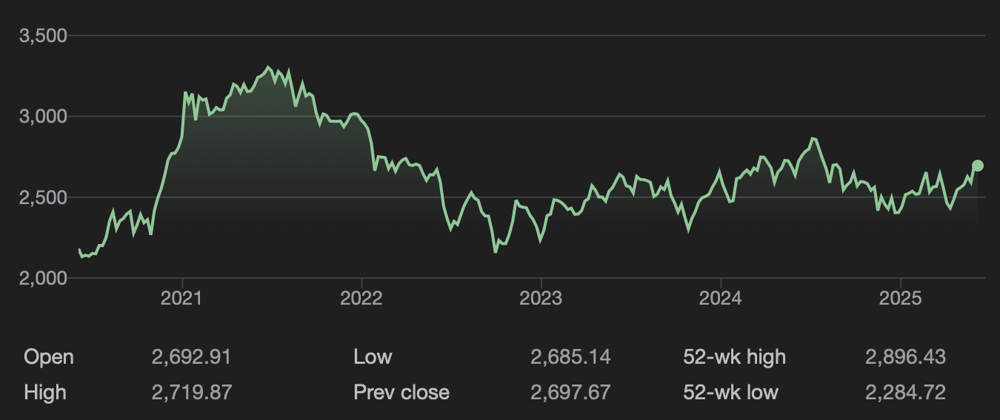
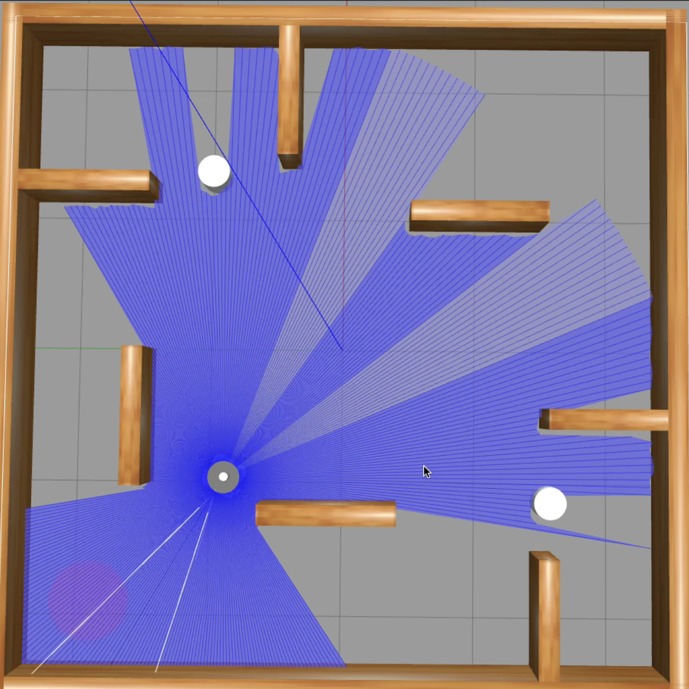
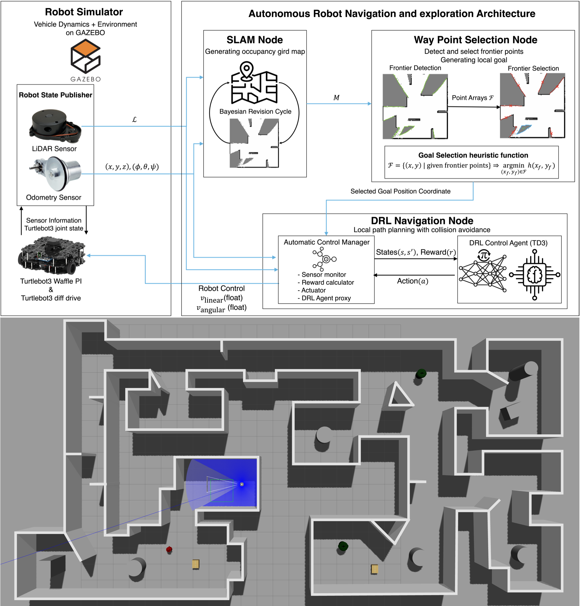
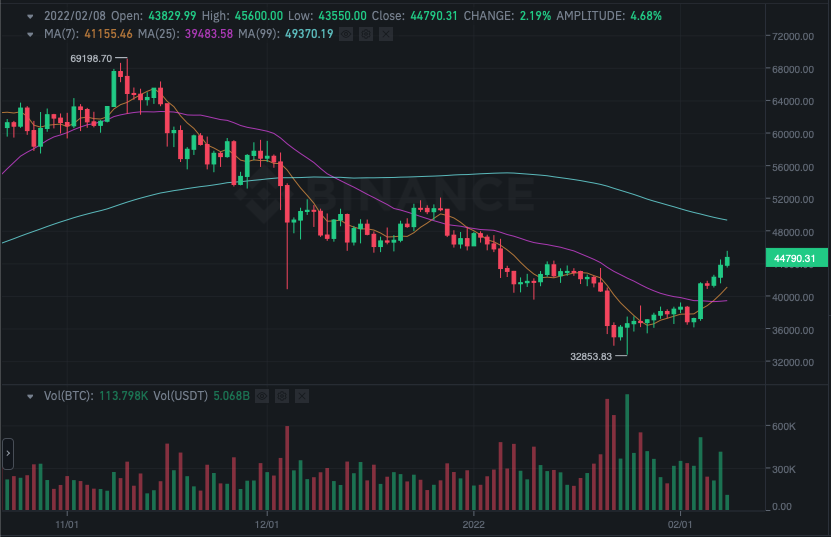
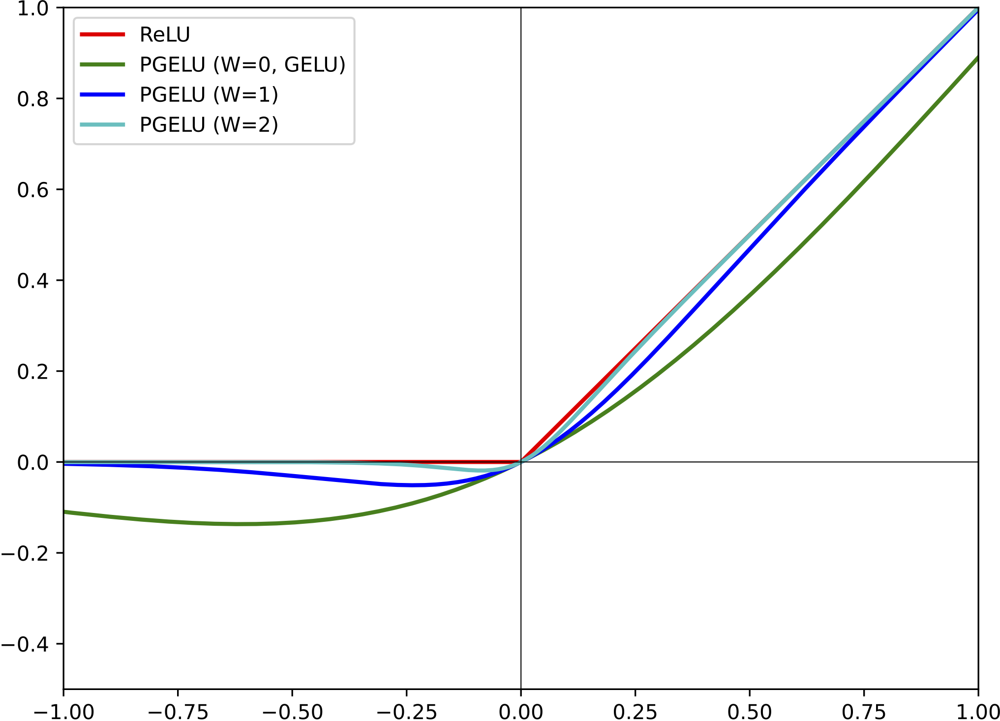

I am Seunghyeop,
an AI researcher
Doctor of Philosophy Student
in Seoul National University.

About
I am currently pursuing my Ph.D. studies at Seoul National University, where I am deeply engaged in research within the domains of Artificial Intelligence Self-driving System.
My academic and research endeavors are primarily centred on the development of autonomous robotic systems, with a particular emphasis on self-navigation capabilities through the integration of deep reinforcement learning algorithms and sensor fusion techniques. This work also involves the architectural design of neural networks optimised for real-time decision-making in dynamic environments.
In addition to my focus on robotics, I maintain a strong intellectual interest in the analysis of time-series data, particularly as it applies to the domain of cryptocurrencies. I am fascinated by the intersection of financial technologies and AI-driven forecasting models, and I actively explore methods to enhance predictive performance in volatile market conditions using advanced machine learning approaches.
Expertise
- Deep Reinforcement Learning
- UGV & UAV navigation control
- Deep Learning
- Image Classification
- Cryptocurrency trading with RL
Experience
ADR Lab
Ph.D. Researcher
August 2025 - Present
I am currently study and working at ADR-Lab(Artificial Intelligence & Autonomous Driving Laboratory). I am focusing on developing lightweight and adaptive deep reinforcement learning algorithms for real-world autonomous systems, focusing on robustness under uncertainty, sensor noise, and limited computation. By integrating data-centric approaches and collaborating with ADR Lab’s expertise in multimodal perception and planning, I aim to build deployable and theoretically grounded RL frameworks.
ADR-Lab WebsiteDMS Lab

Undergraduate Researcher
June 2021 - August 2025
I worked at DMS-Lab(Distributed Multimedia Laboratory). The researches that I worked on are UGV & UAV control and Cryptocurrency trading(Time-series data) forcast with Deep Reinforcement Learning utilising sensor fusioning techniques and classifying disease of agricultures using Deep Neural Network (Deep Learning) Image Classification.
DMS-Lab WebsiteOXEN
Konkuk University Groupsound
March 2021 - October 2023
What I consider as important as studying is a hobby which is music for me. I love to listen to various genres of music such as metal, blues, jazz, funk. I also love to play an instrument.
So I play bass guitar in a band called OXEN.
Bandleader for 2021-2022.
VEX Robotics

Robot Programming
January 2016 - April 2017
VEX Robotics Competition World Championship is one of the biggest robotics competitions in the world. My role in the team was designing robots, programming robots and planning the strategy of the game.
Even though I didn't win a high rank, this experience brought me inspiration to be a researcher of computer science and robotics.
Education
Seoul National University
Ph.D. in College of Engineering Artificial Intelligence
August 2025 - Present
Major in college of engineering interdisciplinary program in artificial intelligence.
During my undergraduate studies in the Department of Computer Science, I developed a strong foundation in core areas of computer science while steadily deepening my focus on artificial intelligence, robotics, and autonomous driving technologies. Through intensive coursework and hands-on research, I refined both my technical expertise and academic vision. These experiences crystallized my commitment to advancing the field of intelligent autonomous systems. Now, as I enter the Ph.D. program in Artificial Intelligence at Seoul National University, I am ready to take the next decisive step in my journey. I aim to contribute both theoretically and practically to the evolution of AI-driven autonomy in real-world environments.
Konkuk University

Bachelor in Computer Science Engineering
MARCH 2019 - August 2025
Major in computer science engineering at Konkuk University.
Computer science engineering(hereinafter referred to as CS) and IT development were attractive to me since I was young. Rather than other majors, implementation in CS is quite instant. This means, whatever I think, I can implement applications or apply new technology and method as soon as I am inspired.
So I'm focusing on improving my coding skills and way to think in a logical way as well as learning research skills that can improve my CS career.
Se-Kwang High School
Science-Focused High School
MARCH 2015 - MARCH 2018
I completed the regular curriculum of Korean high school without missing a single day for 3 years.
Took scholastic aptitude test(for university admission) at NOV 2017 and 2018.
Recent Works
Here are some of my favourite projects and experiences I have done lately. Feel free to check them out.
-
ResearchDisease Detection in Cabbage Using Transfer Learning and Neural Network Optimisation
-
Develop ProductMirrormoji: Emotion-Aware Smart Mirror for Personalised Fashion Recommendations
-
ResearchStock Market Trading Using Reinforcement Learning on the Korean Stock Price Index (KOSPI)
-
 ResearchCOVID-19 Diagnosis Using Chest X-Ray Imaging with Distributed Deep Learning
ResearchCOVID-19 Diagnosis Using Chest X-Ray Imaging with Distributed Deep Learning -
Graduation Project & ResearchAutonomous Mobile Robot Navigation Using Deep Reinforcement Learning Combined with SLAM and Path Planning
-
ResearchFH-DRL: Frontier Heuristics Meets Deep Reinforcement Learning for Autonomous Exploration
-
Application Development ProjectDeep Reinforcement Learning for Cryptocurrency Trading with TD3 on Time-Series Market Data
-
 ResearchMulti-Head Memory Caching TD3 for LiDAR-Robust Autonomous Navigation
ResearchMulti-Head Memory Caching TD3 for LiDAR-Robust Autonomous Navigation -
ResearchParametric Gaussian Error Linear Unit Activation Function Design

Disease Detection in Cabbage Using Transfer Learning and Neural Network Optimisation
This research focuses on the early detection of cabbage diseases through advanced image classification techniques, with the goal of enabling rapid intervention, minimising pesticide usage, and ultimately preventing large-scale agricultural losses. To enhance classification accuracy, we employ transfer learning strategies by adapting pre-trained deep convolutional neural networks (CNNs) and fine-tuning specific layers to better capture disease-specific visual features present in cabbage leaves. By leveraging this approach, the system significantly improves recognition performance in scenarios where labelled data is limited a common constraint in agricultural applications. The architecture modifications include replacing the top classification layers with domain specific dense layers and introducing dropout and batch normalisation for enhanced generalisation. This methodology holds particular relevance for South Korea, where cabbage (notably napa cabbage) constitutes a staple in both diet and economy. The high national consumption of cabbage largely driven by its use in kimchi and various culinary traditions necessitates robust and scalable solutions for disease monitoring. By enabling more accurate and early stage detection, the proposed system supports sustainable farming practices and promotes food security through reduced chemical intervention and improved crop health.
- Deep Learning
- Agriculture
Mirrormoji: Emotion-Aware Smart Mirror for Personalised Fashion Recommendations
The Mirrormoji project is inspired by research findings that highlight the strong relationship between an individual’s emotional state and their clothing preferences. This work explores how real-time affective computing can enhance daily routines by integrating emotion recognition with fashion suggestion systems. Mirrormoji is a smart mirror device that incorporates a reflective film layered over an interactive digital display. When not in use, the mirror provides ambient information such as the current time, weather updates, daily schedules, and news headlines. Users can activate the interactive mode by voice, using a trigger phrase similar to how one might say “Hey Siri”. Once activated, users can engage in natural conversation with Mirrormoji and request personalised style suggestions. The system’s key innovation lies in its ability to analyse the user’s emotional state using multiple input sources including facial expressions, voice tone, and spoken language. This is powered by the Emotion Recognition Engine, a deep learning model supported by LG ThinQ. By interpreting emotional cues, the system identifies the user’s mood and generates fashion recommendations that either complement or positively influence their emotional condition. For instance, if the user appears tired or stressed, Mirrormoji may suggest outfits with energising colours or uplifting styles. Conversely, if the user exhibits confidence or happiness, it may recommend bold designs that reflect that energy. Through this emotionally adaptive functionality, Mirrormoji contributes to personal well-being, expressive identity, and intelligent lifestyle support. This project represents a convergence of emotional artificial intelligence, ambient computing, and user-centred design. It provides a glimpse into the future of affective technology applied to everyday experiences such as self-care and fashion selection.
- Product
- Development
- LG ThinQ
Stock Market Trading Using Reinforcement Learning on the Korean Stock Price Index (KOSPI)
This project explores the application of reinforcement learning in financial market prediction and decision making, with a specific focus on the Korean Stock Price Index, also known as KOSPI. The aim is to construct an autonomous trading agent capable of learning effective strategies for maximising returns in a dynamic and uncertain market environment. The core of the system is based on a reinforcement learning framework, where the agent interacts with a simulated market environment and iteratively improves its trading policy through trial and error. The state space includes both historical stock prices and selected macroeconomic indicators, providing the agent with a contextual understanding of the market’s condition at each time step. At each decision point, the agent chooses from three available actions: buying, selling, or holding a position. The reward function is carefully designed to reflect changes in portfolio value, encouraging the agent to develop strategies that yield consistent long-term profit rather than short-term fluctuations. Throughout the training phase, the agent accumulates knowledge of market patterns and price movements by receiving feedback from the environment in response to its actions. After sufficient training, the agent is evaluated in a test environment using unseen data to assess its ability to generalise. The trained model demonstrates the capacity to make informed decisions based on learned market dynamics, allowing it to respond adaptively to real-world conditions. The result is a reinforcement learning-based trading strategy that offers potential for integration into algorithmic trading systems. This research contributes to the growing field of artificial intelligence in quantitative finance, providing insights into how autonomous agents can be used for active portfolio management, risk-aware decision making, and optimisation of trading behaviour under volatile market conditions.
- Research
- Application Project
- Deep Reinforcement Learning
- Time-series Data
- AI-driven Quant Trading
COVID-19 Diagnosis Using Chest X-Ray Imaging with Distributed Deep Learning
This project focuses on the development of a high-performance deep learning framework for the diagnosis of COVID-19 from chest X-ray images. The objective was to design an optimal neural network architecture capable of accurately distinguishing COVID-19 positive cases from healthy and other pathological lung conditions using radiographic data. To achieve efficient and scalable model training, I constructed a distributed computing environment composed of seven physical servers, orchestrated using MATLAB’s parallel computing and distributed processing capabilities. This setup allowed the training process to be conducted in parallel across multiple nodes, effectively doubling the training speed compared to conventional single-system approaches. The distributed training framework not only accelerated convergence but also enabled the handling of large-scale medical imaging datasets, which are often required for reliable diagnostic performance in clinical settings. Throughout the process, I acquired in-depth experience in configuring and optimising resource allocation, synchronising model updates across compute nodes, and addressing common challenges in distributed artificial intelligence such as communication overhead and data partitioning. By leveraging both algorithmic design and computational infrastructure, the project successfully demonstrated how advanced deep learning models, when combined with distributed system engineering, can significantly improve diagnostic efficiency and accuracy in medical imaging. The resulting system contributes to the broader field of computer-aided diagnosis, and presents a practical solution for deploying AI-powered screening tools in real world clinical environments, particularly under highily demand scenarios such as the COVID-19 pandemic.
- Research
- Deep Learning
- Distributed System Computing
Autonomous Mobile Robot Navigation Using Deep Reinforcement Learning Combined with SLAM and Path Planning
This project addresses the limitations of using deep reinforcement learning alone for autonomous mobile robot navigation in unknown and dynamic environments. While deep reinforcement learning has demonstrated promising results in learning navigation policies through interaction with the environment, its standalone application often suffers from poor generalisation, instability in training, and inefficient trajectory generation, particularly when operating in unstructured or complex spatial layouts. To overcome these limitations, we propose a hybrid architecture that integrates simultaneous localisation and mapping (SLAM), a global path planning module, and a deep reinforcement learning-based local planner. The overall system is modularised into three interconnected components, each designed to contribute a critical functionality to the robot’s decision-making process. First, the SLAM module continuously builds a map of the surrounding environment while simultaneously estimating the robot’s position within that map. This mapping process enables spatial awareness and long-term consistency of the robot’s motion trajectory, which is essential for navigating previously unknown environments. Second, we employ the Ant Colony Optimisation (ACO) algorithm as a global path planner. Once the environment is partially mapped, ACO is used to compute an efficient, obstacle-avoiding path from the robot’s current location to the target destination. This biologically inspired algorithm provides robust global path optimisation under dynamically changing constraints. Third, a deep reinforcement learning agent is responsible for local motion control and dynamic obstacle avoidance. The agent is trained to adaptively respond to real-time changes in the environment, such as the appearance of moving obstacles or variations in terrain, thereby improving navigation safety and adaptability. This component ensures that the robot can follow the globally planned path while reacting to unforeseen local challenges. Through the coordinated operation of these three modules, the system achieves reliable and efficient autonomous navigation. Experimental validation demonstrates that the hybrid approach significantly outperforms purely learning-based methods in terms of path optimality, robustness, and adaptability to dynamic scenarios. This project illustrates a scalable and generalisable approach to mobile robot autonomy, suitable for deployment in various applications such as service robotics, warehouse automation, and intelligent transportation systems.
- Graduation Project
- Research
- Self Navigation
- Deep Reinforcement Learning
FH-DRL: Frontier Heuristics Meets Deep Reinforcement Learning for Autonomous Exploration
I am the first author of a novel research study entitled “FH-DRL: Exponential–Hyperbolic Frontier Heuristics with DRL for Accelerated Exploration in Unknown Environments”, which presents a hybrid framework that seamlessly integrates classical frontier-based exploration with deep reinforcement learning (DRL) for efficient autonomous navigation in unmapped and cluttered environments. In this work, we propose FH-DRL, a modular architecture that couples a newly designed exponential–hyperbolic frontier scoring function with a Twin Delayed Deep Deterministic Policy Gradient (TD3) agent to enable high-speed, adaptive, and robust local planning. Our heuristic prioritisation function dynamically balances proximity, environmental openness, and obstacle density through a stochastic occupancy metric, enabling informed waypoint selection with minimal redundancy. We validated FH-DRL across extensive simulations and real-world scenarios using the Turtlebot3 platform, demonstrating significant improvements over state-of-the-art methods such as Nearest Frontier (NF), Cognitive Frontier Exploration (CFE), and Goal-Driven Autonomous Exploration (GDAE). FH-DRL achieved faster exploration, shorter paths, and higher coverage, especially in complex and partially observable environments. This research contributes to the advancement of intelligent robotic systems in the domains of autonomous vehicles, industrial automation, and planetary exploration, and paves the way for scalable, DRL-enhanced heuristic planning frameworks in robotics.
- IEEE Transactions on Intelligent Vehicles
- Research
- Self Navigation
- Deep Reinforcement Learning
- Frontier-Based Exploration
- Heuristic Approach

Deep Reinforcement Learning for Cryptocurrency Trading with TD3 on Time-Series Market Data
This project investigates the application of deep reinforcement learning to financial time-series data for autonomous cryptocurrency trading. The primary objective is to train and evaluate intelligent agents capable of making optimal trading decisions in the highly volatile and non-stationary environment of digital asset markets. In this work, I implemented and customised the Twin Delayed Deep Deterministic Policy Gradient (TD3) algorithm to operate within a continuous action space, where the agent decides the proportion of capital to allocate toward buying or selling at each timestep. The model is trained using historical market data sourced directly from Binance, covering Bitcoin (BTC) as well as several major altcoins. These data include daily open, high, low, close, and volume metrics over multi-year periods. The architecture includes a custom backtesting environment that simulates trading with real historical data, enabling quantitative evaluation of the model’s performance under realistic constraints. This framework supports reward engineering based on profit-and-loss, drawdown, volatility control, and risk-adjusted returns, offering a more nuanced training signal beyond simple price prediction. Through iterative training and performance validation, the TD3 agent learns a dynamic trading policy that reacts to evolving market conditions and optimises cumulative returns. This project demonstrates the viability of reinforcement learning for financial decision-making and highlights the challenges and opportunities of applying continuous control algorithms to time-series financial domains such as cryptocurrency trading.
- Cryptocurrency
- Application Project
- Deep Reinforcement Learning
- Time-series Data
- AI-driven Quant Trading
Multi-Head Memory Caching TD3 for LiDAR-Robust Autonomous Navigation
This research proposes mhmcTD3, a novel deep reinforcement learning (DRL) framework tailored for autonomous navigation of mobile robots in unstructured environments, with a specific focus on generalisation across varying LiDAR sensor configurations. As the first author, I developed a learning-based navigation system that addresses critical challenges in perception, policy robustness, and small obstacle avoidance. The core innovation of mhmcTD3 lies in its architecture: a modified version of the Twin Delayed Deep Deterministic Policy Gradient (TD3) algorithm enhanced with Multi-Head Memory Caching (MHMC) modules. These modules enable the policy network to process multi-resolution LiDAR data more effectively, allowing the model to learn sensor-agnostic representations of the environment. This architectural advancement ensures generalisation without retraining, even when LiDAR resolution or field of view changes—a common problem in real-world deployment. The framework was trained and evaluated in three simulated environments with increasing complexity: (1) a basic setting with large static obstacles, (2) environments with additional small-scale obstacles, and (3) dynamic environments featuring moving obstacles. The mhmcTD3 agent demonstrated superior navigation speed, map coverage, and obstacle avoidance performance compared to both classical heuristics and state-of-the-art DRL baselines. This work contributes a sensor-resolution-independent approach to DRL-based navigation, advancing the field toward more flexible and deployable mobile robotic systems. The mhmcTD3 framework is particularly well-suited for scenarios such as indoor exploration, delivery robotics, and search-and-rescue operations, where robustness to perception variation is essential.
- IEEE Transactions on Intelligent Vehicles
- Research
- Self Navigation
- Deep Reinforcement Learning
- Sensor Fusion
- Memori Contextualisation
Parametric Gaussian Error Linear Unit Activation Function
As the metaverse continues to redefine human–machine interaction through immersive 3D environments, real-time user input, and emotional context awareness, the demand for robust and adaptive deep learning models is rapidly intensifying. Our recent study introduces PGELU (Parametric Gaussian Error Linear Unit), a novel activation function that extends GELU with a trainable parameter to dynamically modulate non-linearity, improve gradient flow, and enhance generalisation. In this paper, we present a comprehensive exploration of PGELU’s theoretical formulation, computational efficiency, and practical performance across key metaverse-related domains: handwritten digit recognition (MNIST), facial emotion classification (CK+/AffectNet), and 3D object identification (Objaverse). Extensive experiments demonstrate that PGELU not only outperforms conventional activations like ReLU, ELU, SiLU, and GELU in terms of convergence speed and training stability, but also offers greater adaptability for evolving, high-dimensional data environments characteristic of virtual and augmented reality systems. By enabling fine-grained gradient control via a learnable scaling parameter, PGELU mitigates neuron inactivation, supports deeper architectures, and sustains high accuracy even in multimodal and volatile settings. This work provides new insights into activation function design and contributes a scalable solution for next-generation AI systems in the metaverse.
- MetaCom Conference
- Research
- Activation Function
- Deep Learning
- Classification